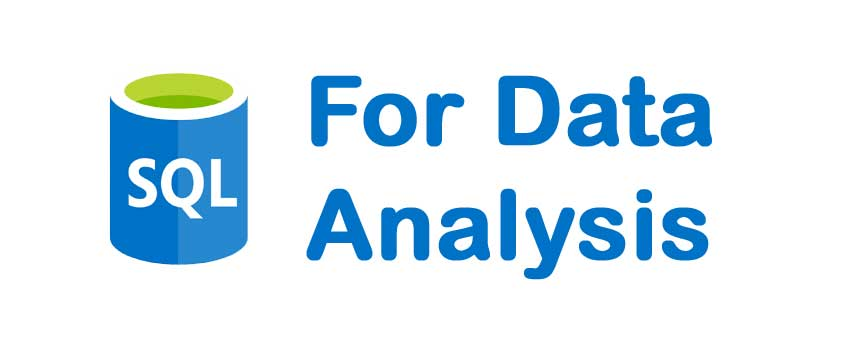

Projects
Superstore Sales Analysis Using MySQL, Python, and Power BI
MySQL, Python, and Power BI were used to analyze the Superstore dataset and provide insights and recommendations for improving profit.
View on GitHub View on MediumSuperstore Sales Analysis Using MySQL, Python, and Power BI
MySQL, Python, and Power BI were used to analyze the Superstore dataset and provide insights and recommendations for improving profit.
View on GitHub View on MediumHuman Resource Data Exploration Using MySQL
Jupyter Notebook was configured with a MySQL database to run SQL queries. Advanced syntaxes like window functions and subqueries were used to explore the dataset.
View on GitHub View on MediumBusiness Insights Using Python
Python libraries such as Pandas, Matplotlib, Seaborn, and Scikit-learn were used in a Jupyter Notebook to generate 33 business insights from an online retail sales dataset.
View on GitHub View on MediumData Exploration in SQL
In this project, sales data is explored using MySQL Workbench to generate business insights.
View on GitHub View on Medium📝 Project Blog
Explore detailed blog posts on my technical projects, rendered with Quarto notebooks.
Visit My Blog